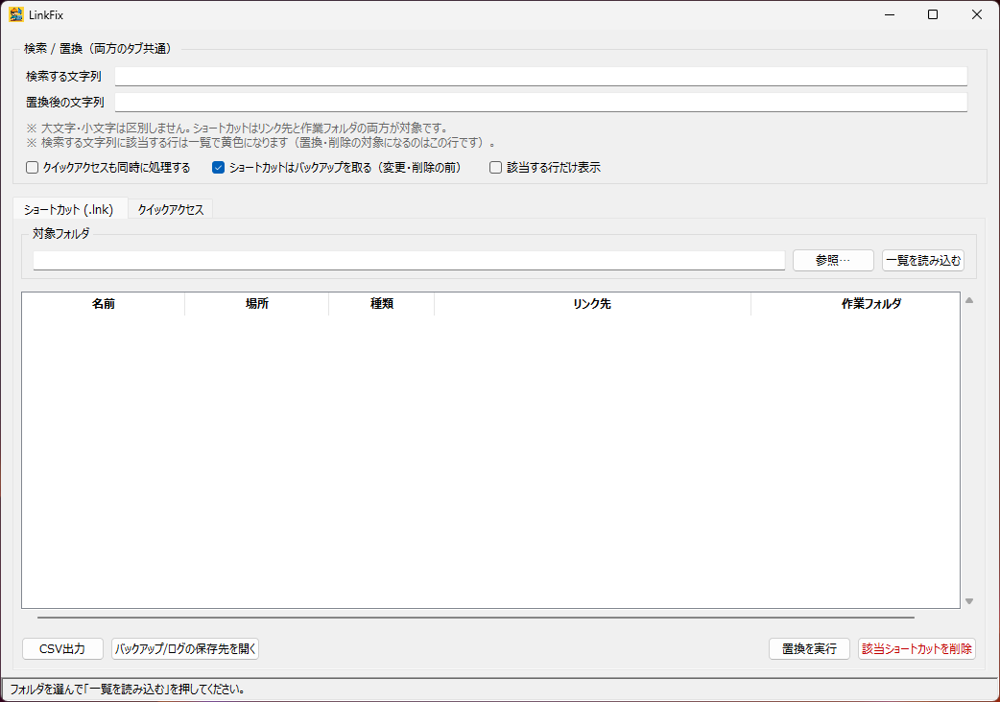

LinkFix
LinkFix v2.0
LinkFixは、ショートカット（.lnk）のリンク先と作業フォルダを一括で置換・削除できる無料のWindowsツールです。サーバーやNASのアドレス変更に伴うショートカットの修正作業をまとめて行えます。
ダウンロード
主な機能
- ショートカットのリンク先・作業フォルダの一括置換（大文字・小文字は区別しません）
- 特定のアドレスを含むショートカットの一括削除
- 一覧にフォルダの階層（場所）と種類を表示。置換・削除の対象は黄色でハイライト
- 変更・削除の前に自動でバックアップ。バックアップとログは実行ファイルと同じ場所に保存
- 「ネットワークの場所」形式（モニタのアイコン）のショートカットにも対応
- エクスプローラーの「クイックアクセス」のピン留めを置換・削除（ピン留めのみを対象にすることも可能）
- 処理の進捗表示と中止ボタン
- CSV出力とログ保存に対応
- インストール不要ですぐに使用可能
ご利用にあたって：
ショートカットの置換・削除は、事前にバックアップを取ってから実行されます（設定でオフにも可能）。
クイックアクセスの置換・削除はバックアップされませんのでご注意ください。
初めて使うときは、少数のショートカットで試してからの実行をおすすめします。
動作環境
- Windows 10 / 11
- Pythonのインストールは不要です（実行ファイル形式）
更新履歴
- v2.0：削除機能、大文字・小文字の区別なし、階層表示、バックアップ、ネットワークの場所形式への対応、クイックアクセス対応、進捗表示を追加。画面を刷新
- v1.1：リンク先・作業フォルダの一括置換、CSV出力、ログ保存
掲載実績

画面イメージ
